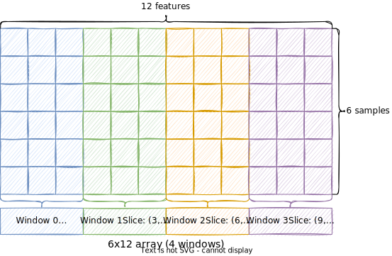

Using data sets
A data set is a collection of data samples and labels used to train a model. For instance, HAR datasets are usually represented as a dataframe, where each row represent a sample and have another value representing the correspoing activity. librep provides an abstract class in order to represent a dataset, being librep.base.Dataset, based on Pytorch.
The librep.base.Dataset provides an interface to implement a map-style dataset. Map-styles datasets have two properties:
It can be accessed by subscription, like a vector, for instance: dataset[0].
librep.base.Datasetmust implement the__getitem__interface.It is measurable, and return the number of samples when using
len()function, such aslen(dataset).librep.base.Datasetmust implement the__len__interface.
Map-style datasets provide random-access capbilities, give you their size ahead of time, are easier to shuffle, allow for easy parallel loading, and allows lazy loading of data.
When an element retrieved from a class inherited from librep.base.Dataset, using the subscript operator, a 2 element tuple must be returned, where:
The first element is the sample itself
The second element is the label of this sample. If the dataset is unlabeled, it must return
None.
Implementing a simple dataset
In order to implement a dataset, we must first derive from librep.base.Dataset and implement the __getitem__ and __len__ interfaces. The __getitem__ receives an index as parameter and must return a 2-element tuple.
Let’s implement a dataset which takes a list of samples X and the respective labels y as parameters and returns a 2-element tuple when accessed.
[2]:
import numpy as np
import pandas as pd
from librep.base.data import Dataset, SimpleDataset
from librep.datasets.common import PandasDataset
[3]:
class MyDataset(Dataset):
def __init__(self, X: list, y: list):
self.X = X
self.y = y
def __len__(self):
return len(self.X)
def __getitem__(self, index):
return (self.X[index], self.y[index])
# (optional) Simple interface to describe the object as string
def __str__(self) -> str:
return f"MyDataset: {len(self)} samples; {len(set(self.y))} classes"
def __repr__(self) -> str:
return str(self)
Using lists
Let’s create a list of 3-feature sample (samples) and the respective labels (labels) and wrap arround the MyDataset class.
[4]:
samples = [[1, 2, 3], [3, 2, 1], [0.5, 0.5, 0.5], [0, 0, 0]]
labels = [0, 0, 1, 1]
dataset = MyDataset(X=samples, y=labels)
dataset
[4]:
MyDataset: 4 samples; 2 classes
We can check the length of the dataset, that is, the number of samples, using python’s len() function
[5]:
len(dataset)
[5]:
4
We can access the elements of the dataset using the subscritable operato. It will return a 2-element tuple where: first element is the sample and second is the label.
[6]:
# It will return a tuple: first element is the first sample and
# second the label correspoding to this sample
dataset[0]
[6]:
([1, 2, 3], 0)
[7]:
first_sample = dataset[0][0]
first_label = dataset[0][1]
print(f"First sample: {first_sample}")
print(f"First label: {first_label}")
First sample: [1, 2, 3]
First label: 0
We can iterate over the samples, by its index
[8]:
for index in range(len(dataset)):
sample, label = dataset[index]
print(f"Index: {index}. Sample: {sample}. Label: {label}")
Index: 0. Sample: [1, 2, 3]. Label: 0
Index: 1. Sample: [3, 2, 1]. Label: 0
Index: 2. Sample: [0.5, 0.5, 0.5]. Label: 1
Index: 3. Sample: [0, 0, 0]. Label: 1
Slices are also allowed to get itens from dataset, using python’s slice notation.
Let’s select the samples from index [0, 2).
[9]:
samples, labels = dataset[0:2]
print(f"The samples from [0, 2): {samples}")
print(f"The labels from [0, 2): {labels}")
The samples from [0, 2): [[1, 2, 3], [3, 2, 1]]
The labels from [0, 2): [0, 0]
We can also select all samples, using python’s slice notation (blank :)
[10]:
samples, labels = dataset[:]
print(f"All samples: {samples}")
print(f"All labels: {labels}")
All samples: [[1, 2, 3], [3, 2, 1], [0.5, 0.5, 0.5], [0, 0, 0]]
All labels: [0, 0, 1, 1]
We can select all samples (without labels), using python’s slice notation and select the index 0 from the returned tuple
[11]:
samples = dataset[:][0]
print(f"All samples: {samples}")
All samples: [[1, 2, 3], [3, 2, 1], [0.5, 0.5, 0.5], [0, 0, 0]]
Also to labels
[12]:
labels = dataset[:][1]
print(f"All labels: {labels}")
All labels: [0, 0, 1, 1]
Using numpy
The same class can also be used to numpy arrays, instead of python’s lists, as numpy implement __getitem__ and slices
[13]:
samples = np.arange(12).reshape(4, 3)
labels = np.array([0, 0, 1, 1])
print(f"Samples:\n{samples}")
print(f"Shape of array:\n{samples.shape}")
Samples:
[[ 0 1 2]
[ 3 4 5]
[ 6 7 8]
[ 9 10 11]]
Shape of array:
(4, 3)
Wrapping numpy arrays arround MyDataset class will iterate by array’s rows
[14]:
dataset = MyDataset(X=samples, y=labels)
dataset
[14]:
MyDataset: 4 samples; 2 classes
[15]:
samples, labels = dataset[0:2]
print(f"The samples from [0, 2):\n{samples}")
print(f"The labels from [0, 2):\n{labels}")
The samples from [0, 2):
[[0 1 2]
[3 4 5]]
The labels from [0, 2):
[0 0]
The SimpleDataset class
An analogy from MyDataset is implemented in librep.base.data.SimpleDataset and can be used in the same way as the MyDataset
[16]:
samples = np.arange(12).reshape(4, 3)
labels = np.array([0, 0, 1, 1])
dataset = SimpleDataset(X=samples, y=labels)
dataset[0]
[16]:
(array([0, 1, 2]), 0)
Using Pandas dataframes
We can also create a dataset interface from a Pandas Dataframe, iterating over the rows. A simple implementation is provided from librep.datasets.common.PandasDataset class. Given a dataframe, the columns that compose the features of the sample must be informed and also the columns that represent the features, by the features_columns and label_columns variables.
Let’s create a simple dataframe with 5 columns (a, b, c, d and label) and 4 rows.
[17]:
dataframe = pd.DataFrame(
np.arange(20).reshape(4, 5),
columns=["a", "b", "c", "d", "label"]
)
dataframe
[17]:
| a | b | c | d | label | |
|---|---|---|---|---|---|
| 0 | 0 | 1 | 2 | 3 | 4 |
| 1 | 5 | 6 | 7 | 8 | 9 |
| 2 | 10 | 11 | 12 | 13 | 14 |
| 3 | 15 | 16 | 17 | 18 | 19 |
Lets wrap arround librep.datasets.common.PandasDataset, specifying the columns a, b, c, and d to compose the features of a sample and specifying the label column to be the respective label.
[18]:
dataset = PandasDataset(
dataframe,
features_columns=["a", "b", "c", "d"],
label_columns="label", # can be a list of strings (multi-label per sample)
as_array=False # If true, when the sample will be converted to a numpy array
# before returned. Default is true
)
dataset
[18]:
PandasDataset: samples=4, features=4, label_column='label'
[19]:
print(f"The dataset has {len(dataset)} samples")
The dataset has 4 samples
Similarly, we can retrieve a sample using the python’s subscription operator, that will return a 2-element tuple with sample and label.
NOTE: If the
as_arrayoption is set the sample and label will be returned as an numpy array instead of a dataframe (or Pandas Series).
[20]:
dataset[0]
[20]:
(a 0
b 1
c 2
d 3
Name: 0, dtype: int64,
4)
[21]:
first_sample = dataset[0][0]
first_label = dataset[0][1]
print(f"First sample:\n{first_sample}")
print(f"First label:\n{first_label}")
First sample:
a 0
b 1
c 2
d 3
Name: 0, dtype: int64
First label:
4
Slices are also allowed to get itens from dataset, using python’s slice notation.
Let’s select the samples from index [0, 1].
[22]:
samples, labels = dataset[0:1]
print(f"The samples from [0, 1]:\n{samples}")
print(f"The labels from [0, 1]:\n{labels}")
The samples from [0, 1]:
a b c d
0 0 1 2 3
1 5 6 7 8
The labels from [0, 1]:
0 4
1 9
Name: label, dtype: int64
We can also select all samples, using python’s slice notation (blank :)
[23]:
samples, labels = dataset[:]
print(f"All samples:\n{samples}")
print(f"All labels:\n{labels}")
All samples:
a b c d
0 0 1 2 3
1 5 6 7 8
2 10 11 12 13
3 15 16 17 18
All labels:
0 4
1 9
2 14
3 19
Name: label, dtype: int64
If as_array is not set, the returned value will be a Dataframe (or Series) and we can access labeled columns
[24]:
samples, labels = dataset[:]
print(f"All samples (column a):\n{samples['a']}")
All samples (column a):
0 0
1 5
2 10
3 15
Name: a, dtype: int64
We can select only samples or only labels
[25]:
samples = dataset[:][0]
samples
[25]:
| a | b | c | d | |
|---|---|---|---|---|
| 0 | 0 | 1 | 2 | 3 |
| 1 | 5 | 6 | 7 | 8 |
| 2 | 10 | 11 | 12 | 13 |
| 3 | 15 | 16 | 17 | 18 |
[26]:
labels = dataset[:][1]
labels
[26]:
0 4
1 9
2 14
3 19
Name: label, dtype: int64
If we set as_array to True, the returned samples will be arrays, not dataframes. The features will be selected in order of the features columns indicated.
Let’s create a Dataset from dataframe using the columns: d, c and b and label as column label.
[27]:
dataset = PandasDataset(
dataframe,
features_columns=["d", "c", "b"],
label_columns="label", # can be a list of strings (multi-label per sample)
as_array=True # If true, when the sample will be converted to a numpy array
# before returned. Default is true
)
dataset
[27]:
PandasDataset: samples=4, features=3, label_column='label'
[28]:
dataset[0]
[28]:
(array([3, 2, 1]), 4)
[29]:
samples, labels = dataset[:]
print(f"All samples:\n{samples}")
print(f"All labels:\n{labels}")
All samples:
[[ 3 2 1]
[ 8 7 6]
[13 12 11]
[18 17 16]]
All labels:
0 4
1 9
2 14
3 19
Name: label, dtype: int64
Multi Modal Datasets
Several datasets are composed by multi-modal samples. A multi modal sample is a sample where features come from different natures (e.g., different capture devices, configurations, axes, etc.). For instance, in HAR datasets, a sample may be composed by features coming from 6 different natures (6-column vector): accelerometer axis x, accelerometer axis y, accelerometer axis z, gyroscope axis x, gyroscope axis y, gyroscope axis z. Or a sample may be composed by \(n\) instants of time data coming from different natures, such as: 300 instants of time of accelerometer axis x, 300 instants of time of accelerometer axis y, 300 instants of time of accelerometer axis z, 300 instants of time of gyroscope axis x, 300 instants of time of gyroscope axis y, 300 instants of time of gyroscope axis z.
Librep provides an interface to create multi-modal datasets, which is a dataset where the samples are composed by collection of features comming from different natures. This is illustrated at Figure below.

MultiModal Numpy Arrays
A simple array is composed by samples (rows) and features (columns). The samples are composed by features form different natures (the colors). We will call a collection of features (in sequence) from one specific nature as window. For instance, a window can be an axis of the accelerometer or an axis of the gyroscope data.
A window is a slice of features (columns) and have a start and end column indexes. As in the feature, the Window 0 is composed by columns 0 to 2, the Window 1 is composed by columns 3 to 5, and so on.
Librep provides a librep.datasets.multimodal.ArrayMultiModalDataset class to describe multi-modal datasets. The __getitem__ works normally, as Dataset, and will return the whole sample and accessed, as well as, __len__, that will return the number of samples.
An mandatory parameter is window_slices that describe the windows slices. window_slices must be a list of 2-element tuples. Each tuple is composed by the index of the start column and the index of the end column.
[30]:
from librep.datasets.multimodal import ArrayMultiModalDataset
samples = np.arange(16).reshape(4, 4)
labels = np.array([0, 0, 1, 1])
print(samples)
print(labels)
[[ 0 1 2 3]
[ 4 5 6 7]
[ 8 9 10 11]
[12 13 14 15]]
[0 0 1 1]
[31]:
multi_modal_dataset = ArrayMultiModalDataset(
X=samples, y=labels,
window_slices=[(0, 2), (2, 4)], # window 0 are composed by columns 0 and 1
# window 2 are composed by columns 2 and 3
window_names=["a", "b"] # Optional parameter informing the name
# of each window
)
print(f"There are {len(multi_modal_dataset)} samples")
There are 4 samples
The subscription operation will return a tuple with the whole sample and the label, as in Dataset.
[32]:
multi_modal_dataset[0]
[32]:
(array([0, 1, 2, 3]), 0)
Some additional properties of MultiModalDataset are:
num_windows: returns the number of windows slices, that is, the length ofwindow_sliceswindow_slices: return the list of window slices (tuple with start and end columns)window_names: Optional the name of each window.
[33]:
print(f"Number of windows: {multi_modal_dataset.num_windows}")
print(f"The window slices: {multi_modal_dataset.window_slices}")
Number of windows: 2
The window slices: [(0, 2), (2, 4)]
Multimodal dataframes
Similarly to numpy arrays, we can also have multimodal dataframe datasets using the librep.datasets.multimodal.PandasMultiModalDataset class. Differently from ArrayMultiModalDataset, the __getitem__ will return a sample with only the features from the slices, and the respective label.
The windows are dataframe columns and must be informed at object’s instantiation, using the feature_prefixes. The feature_prefixesis a list of strings and each string is the prefix of the column name. The window slices will be generated automatically based on each prefix.
For instance, let’s generate a dataframe with 5 columns accel-0, accel-1, gyro-0, gyro-1, and label.
[34]:
from librep.datasets.multimodal import PandasMultiModalDataset
dataframe = pd.DataFrame(
np.arange(20).reshape(4, 5),
columns=["accel-0", "accel-1", "gyro-0", "gyro-1", "label"]
)
dataframe
[34]:
| accel-0 | accel-1 | gyro-0 | gyro-1 | label | |
|---|---|---|---|---|---|
| 0 | 0 | 1 | 2 | 3 | 4 |
| 1 | 5 | 6 | 7 | 8 | 9 |
| 2 | 10 | 11 | 12 | 13 | 14 |
| 3 | 15 | 16 | 17 | 18 | 19 |
The feature_prefixes is a list of strings that are prefixes of column names that must compose each slice. Specifying accel and gryo prefixes will create 2 slices, the first slice are columns starting with accel (accel-0 and accel-1 columns) and the second slice are columns starting with gyro(gyro-0 and gyro-1 columns). Windows may each other.
[35]:
multi_modal_dataset = PandasMultiModalDataset(
dataframe,
feature_prefixes=["accel", "gyro"],
label_columns="label",
as_array=False
)
multi_modal_dataset
[35]:
PandasMultiModalDataset: samples=4, features=4, no. window=2
Get item will return a tuple with the sample (the column of all slices) and the label.
[36]:
multi_modal_dataset[0]
[36]:
(accel-0 0
accel-1 1
gyro-0 2
gyro-1 3
Name: 0, dtype: int64,
4)
[37]:
print(f"Number of windows: {multi_modal_dataset.num_windows}")
print(f"The window slices: {multi_modal_dataset.window_slices}")
Number of windows: 2
The window slices: [(0, 2), (2, 4)]
The window_names parameter will be set according to the prefixes.
[38]:
multi_modal_dataset.window_names
[38]:
['accel', 'gyro']
The example below will consider a dataset with two prefixes gyro and accel-0. So gyro-0 and gyro-1 columns will be select for first slice and accel-0 column for second slice.
[39]:
multi_modal_dataset = PandasMultiModalDataset(
dataframe,
feature_prefixes=["gyro", "accel-0"],
label_columns="label",
as_array=False
)
multi_modal_dataset
[39]:
PandasMultiModalDataset: samples=4, features=3, no. window=2
Getting an item will return a sample with the features gyro-0, gyro-1 and accel-0 only, and the respective label.
NOTE: The behaviour of
__getitem__is different fromArrayMultiModalDatasetandPandasMultiModalDataset. The first, returns the whole sample (as first element of the tuple) and the later return only the columns from all slices from a sample.
[40]:
multi_modal_dataset[0]
[40]:
(gyro-0 2
gyro-1 3
accel-0 0
Name: 0, dtype: int64,
4)
Slicing operations are supported, as well. For instanace,to select only itens 0 and 1, we can use python’s slice notation.
[41]:
samples, labels = multi_modal_dataset[0:1]
samples
[41]:
| gyro-0 | gyro-1 | accel-0 | |
|---|---|---|---|
| 0 | 2 | 3 | 0 |
| 1 | 7 | 8 | 5 |
[42]:
labels
[42]:
0 4
1 9
Name: label, dtype: int64
And we can select the whole dataset using the blank slice(:)
[43]:
all_samples, all_labels = multi_modal_dataset[:]
all_samples
[43]:
| gyro-0 | gyro-1 | accel-0 | |
|---|---|---|---|
| 0 | 2 | 3 | 0 |
| 1 | 7 | 8 | 5 |
| 2 | 12 | 13 | 10 |
| 3 | 17 | 18 | 15 |
If the parameter as_array was not set, a dataframe will be returned. It can be accesed/indexed as any other pandas dataframe.
For instance to select the accel-0 from samples 1 and 2, we can:
Select sample [1:2], using slice notation. This will return a tuple where: the first element are 2 samples and the second element are 2 labels
As we do not want label, we will select only the samples (tuple at index 0)
We can select only the
accel-0from the samples
[44]:
multi_modal_dataset[1:2][0]["accel-0"]
[44]:
1 5
2 10
Name: accel-0, dtype: int64
Combining MultiModal Datasets
We can combine two multi modal dataset and generate a new multi modal dataset. Given two multi modal datasets d1 and d2 the function librep.datasets.multimodal.combine_multi_modal_datasets will combine both, generating a new ArrayMultiModalDataset dataset. The columns will be concatenated along column axis (axis 1) and the window_slices and window_names will be concatenated.
NOTE: The dataset must have the same number of samples
[45]:
from librep.datasets.multimodal import combine_multi_modal_datasets
# Create first dataset (d1)
samples = np.arange(24).reshape(4, 6)
labels = np.array([0, 0, 1, 1])
d1 = ArrayMultiModalDataset(
X=samples, y=labels,
window_slices=[(0, 3), (3, 6)], # window 0 are composed by columns 0 and 1
# window 2 are composed by columns 2 and 3
window_names=["a", "b"] # Optional parameter informing the name
# of each window
)
samples, labels = d1[:]
print(f"There are {len(d1)} samples")
print(f"Number of windows: {d1.num_windows}")
print(f"The window slices: {d1.window_slices}")
print(f"Samples:\n{samples}")
There are 4 samples
Number of windows: 2
The window slices: [(0, 3), (3, 6)]
Samples:
[[ 0 1 2 3 4 5]
[ 6 7 8 9 10 11]
[12 13 14 15 16 17]
[18 19 20 21 22 23]]
[46]:
# Create first dataset (d2)
samples = np.random.rand(16).reshape(4, 4)
labels = np.array([0, 0, 1, 1])
d2 = ArrayMultiModalDataset(
X=samples, y=labels,
window_slices=[(0, 2), (2, 4)], # window 0 are composed by columns 0 and 1
# window 2 are composed by columns 2 and 3
window_names=["a", "b"] # Optional parameter informing the name
# of each window
)
samples, labels = d2[:]
print(f"There are {len(d2)} samples")
print(f"Number of windows: {d2.num_windows}")
print(f"The window slices: {d2.window_slices}")
print(f"Samples:\n{samples}")
There are 4 samples
Number of windows: 2
The window slices: [(0, 2), (2, 4)]
Samples:
[[0.58895787 0.5643091 0.8976771 0.02313373]
[0.35787806 0.80059999 0.73337245 0.69527011]
[0.87865971 0.56032394 0.05731238 0.04009845]
[0.93522439 0.67061756 0.45800757 0.61601819]]
[47]:
# Combining d1 and d2
resultant_dataset = combine_multi_modal_datasets(d1, d2)
samples, labels = resultant_dataset[:]
print(f"There are {len(resultant_dataset)} samples")
print(f"Number of windows: {resultant_dataset.num_windows}")
print(f"The window slices: {resultant_dataset.window_slices}")
print(f"Samples:\n{samples}")
There are 4 samples
Number of windows: 4
The window slices: [(0, 3), (3, 6), (6, 8), (8, 10)]
Samples:
[[ 0. 1. 2. 3. 4. 5.
0.58895787 0.5643091 0.8976771 0.02313373]
[ 6. 7. 8. 9. 10. 11.
0.35787806 0.80059999 0.73337245 0.69527011]
[12. 13. 14. 15. 16. 17.
0.87865971 0.56032394 0.05731238 0.04009845]
[18. 19. 20. 21. 22. 23.
0.93522439 0.67061756 0.45800757 0.61601819]]
TODO: Accessing windows
[ ]: